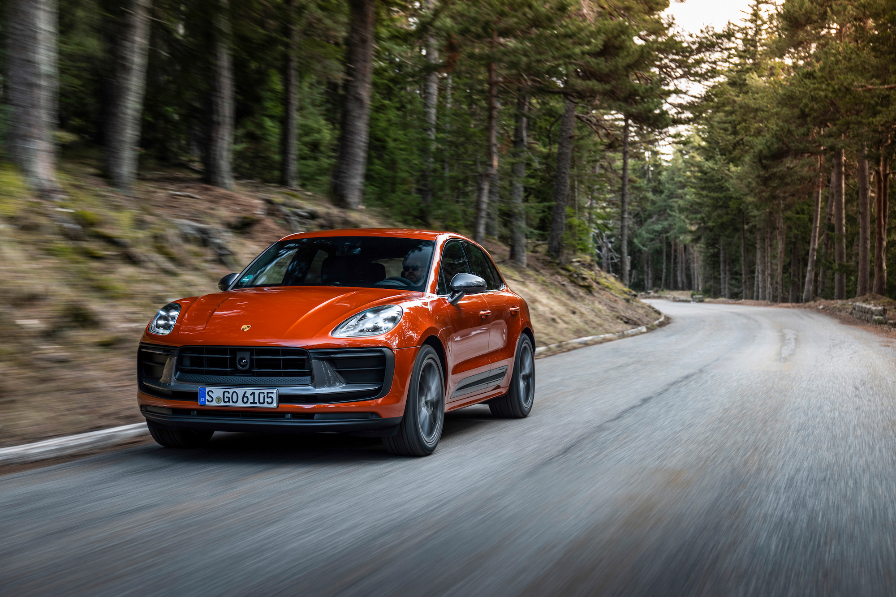
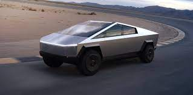

All Bookmarks
Motor Authority
@mototauthority
May 5
Porshe Waffling on killing gas-powered Macan

motorauthority.com
Porshe Waffling on killing gas-powered Macan
Porsche plans to launch a redesigned Macan featuring electric power early next year but also may keep the current gas-powered model on sale for a while. The transition period in which the two versions are sold simultaneously may stretch longer than previously planned due to the uncertainty of the market's switch to EVs.
18
32
567
24.3k
2
15
78
4020

CBS NEWS
@cbsnews
• May 5
Tesla factory produces Cybertruck nearly 4 years after Elon Musk unveiled it
cbsnews.com/tesla-cybertru...

cbsnews.com
STesla factory produces Cybertruck nearly 4 years after Elon Musk unveiled it
Tesla has manufactured its first Cybertruck nearly four years after founder and CEO Elon Musk touted the automaker's first electric pickup..
9
56
45.7k